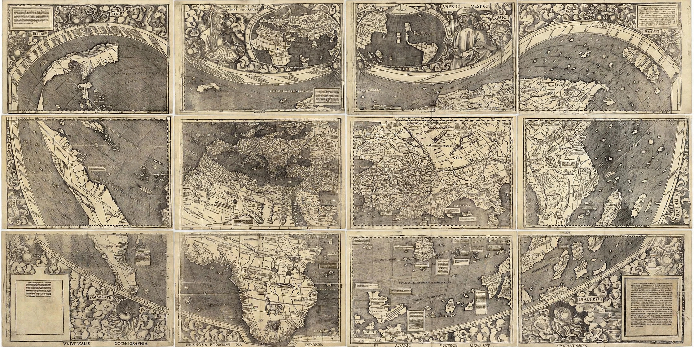

Martin Waldseemüller
| Martin Waldseemüller | |
|---|---|
| Born | c. 1470 Wolfenweiler, Margraviate of Baden (Germany) |
| Died | 16 March 1520 Saint-Dié-des-Vosges, Duchy of Lorraine |
| Occupation | Cartographer, humanist scholar, cleric |
| Known for | 1507 world map (Universalis Cosmographia) naming "America" |

Martin Waldseemüller (c. 1470 – 16 March 1520) was a German cartographer and humanist scholar. Working with Matthias Ringmann at Saint-Dié-des-Vosges in Lorraine, he published in 1507 the Universalis Cosmographia, the first map to apply the name "America" to the newly encountered lands across the Atlantic — a coinage honouring the explorer Amerigo Vespucci that, despite Waldseemüller's own later retreat from it, spread irreversibly through European cartography.
Life
Waldseemüller was born near Freiburg in the Breisgau and studied at the University of Freiburg. By 1507 he was a member of the Gymnasium Vosagense, a circle of humanists gathered at Saint-Dié under the patronage of Duke René II of Lorraine, working on a new edition of Ptolemy's Geography. He later became a canon of the collegiate church at Saint-Dié, and produced further maps, including the Carta Marina of 1516 and maps for the 1513 Strasbourg edition of Ptolemy.
The 1507 map and the naming of America
In April 1507 the Saint-Dié circle published the Cosmographiae Introductio, a short treatise (written largely by Ringmann) accompanied by Waldseemüller's great twelve-sheet woodcut wall map and a set of globe gores. Drawing on the published letters attributed to Vespucci, which argued that the lands found across the Atlantic were a mundus novus — a new continent, not Asia — the Introductio proposed naming it after its "discoverer": "I see no reason why anyone should justly object to calling this part... America, after Amerigo who discovered it". On the map, "AMERICA" is printed across the southern part of the new continent — present-day Brazil. About 1,000 copies of the map were printed, but only one survives: rediscovered at Schloss Wolfegg in 1901, it was purchased by the Library of Congress in 2003 for ten million dollars and is displayed in Washington, D.C.
Later work
Waldseemüller seems to have become doubtful of the Vespucci attribution: in the 1513 Ptolemy atlas he labelled the continent Terra Incognita and credited Columbus. The correction came too late — other mapmakers, including Gerardus Mercator, who by 1538 applied "America" to both northern and southern continents, had already fixed the name in use.
See also
Amerigo Vespucci · Matthias Ringmann · Universalis Cosmographia · Christopher Columbus